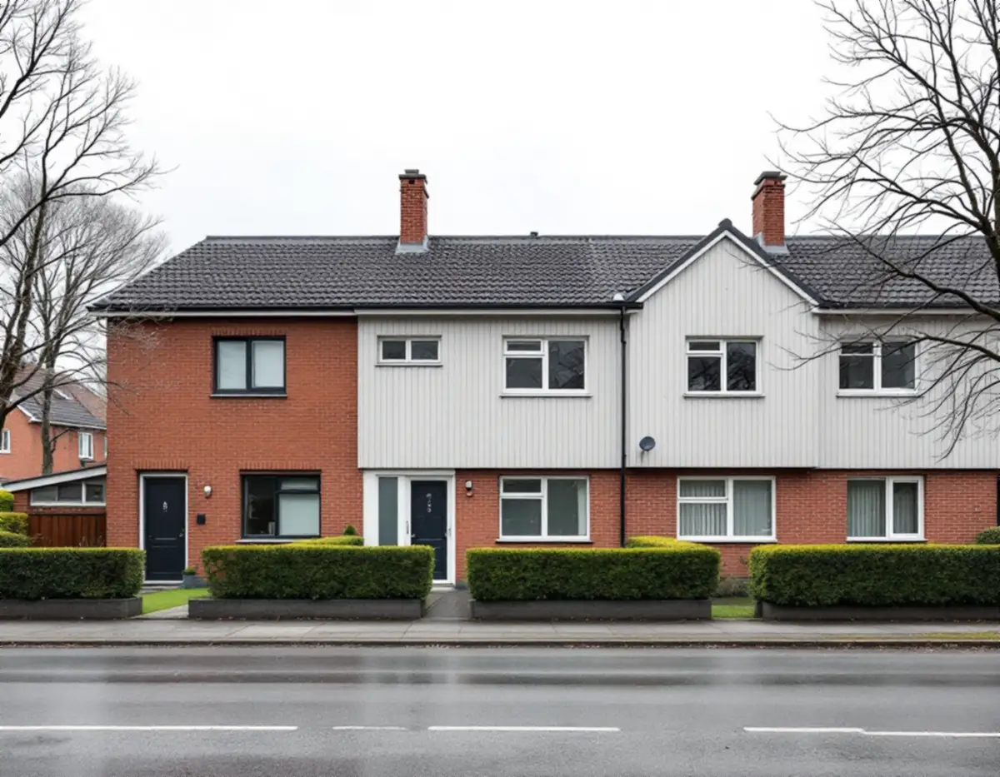
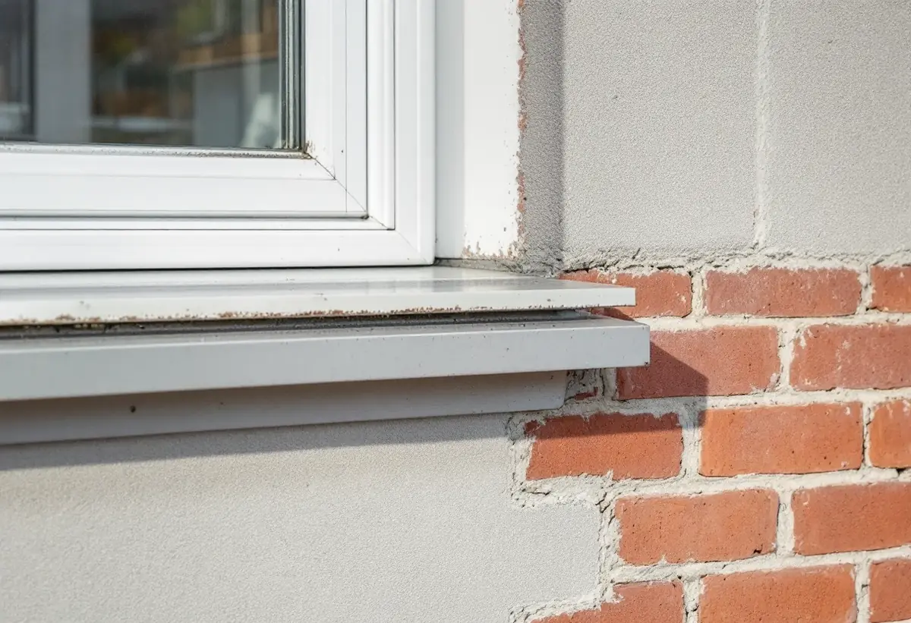

Genomgång av materialen
Vi går runt huset och noterar tegel, puts, skivor och trädetaljer.
Ett radhus i Farsta har sällan bara ett fasadmaterial. Tegel, puts, skivor och trädetaljer kan sitta på samma gavel, och var och en kräver sitt. Geal Entreprenad AB målar fasader i Farsta och börjar med att reda ut vilka delar som ska målas, vilka som bara behöver tvättas och vilka som inte ska bearbetas förrän man vet vad de innehåller.

Farsta stod klart 1961, ett år efter Högdalen, enligt stadens vägledning om småhusområden. Till skillnad från Vällingby planerades Farsta i stor utsträckning utifrån bilen, med stora parkeringsplatser vid centrum och en öppnare struktur. Högre hus placerades nära centrum och grupper av rad- och kedjehus längst ut. Vägledningen skriver att även Farstas bebyggelse präglades av höga ambitioner, att fasader i rött tegel var vanliga och att det också förekom puts och skivor i fibercement.
Bland karaktärsdragen för tunnelbanestädernas småhusområden räknar vägledningen enhetligt utformade husgrupper och tidstypisk färgsättning. I tabellen markeras Farsta som kulturhistoriskt värdefull miljö, liksom delar av Sköndal, medan Farsta strand inte är markerat. För en ny kulör på ett radhus är det därför klokt att se både vad huset har i dag och hur resten av gruppen ser ut.

Boverket beskriver hur många fasader under 1940- och 1950-talen kläddes med cementfiberplattor som innehöll asbest. Plattorna är nästan underhållsfria och behöver bara tvättas då och då så länge de är hela, men de förbjöds på 1970-talet sedan det konstaterats att asbestfibrer kan orsaka cancer. I kapitlet om tunnelbanestäderna nämner stadens vägledning asbestcement som ett populärt material och skriver att det i många fall har bytts ut. Det finns i dag fasadskivor utan asbest som kan behålla husens uttryck.
Enligt Boverket är asbest i bunden form ingen fara, men fibrer kan frigöras när materialet sågas, slipas, borras, skrapas, stålborstas, rengörs med tryckluft, högtryckstvättas eller blästras. Hus byggda mellan 1940 och 1980 innehåller sannolikt asbest någonstans, och provtagning med analys är det enda säkra sättet att veta. Därför tvättar, skrapar eller slipar vi inga äldre fasadskivor på ett radhus från den tiden förrän ett prov har analyserats. Färger finns också med på Boverkets lista över material där asbest kan förekomma.
Länsstyrelsernas blad om puts beskriver att kalkcementputs är vanlig på byggnader från 1950-talet och framåt. Ju mer cement bruket innehåller, desto hårdare, mindre elastisk och tätare blir putsen. På sådan puts går det inte att avfärga med vanlig kalkfärg. Bladet föreslår i stället en tjockare kalkfärg med ballast av krossad dolomit, som täcker bättre och normalt bara behöver två strykningar.
Bladet varnar också för målning med alltför tät färg, till exempel plastfärg, eftersom fukt inifrån då inte kan ta sig ut. Omålat fasadtegel har ingen färg som behöver förnyas, och vår bedömning är att det ska få vara omålat som en del av husgruppens tidstypiska uttryck. Kring teglet är det i stället fönsterbleck, foder och fogar mot andra material som vi tittar på.
På ett radhus är det ofta trädetaljerna som behöver målas oftast: vindskivor, takfot, foder och entrépartier. Länsstyrelsernas blad om målning på trä påminner om att söderfasader behöver målas oftare än andra väggar och fönster och dörrar oftare än fasader, och att det ibland räcker med att tvätta om färgen bara är smutsig. Boverket skriver att akrylatfärg på trä kräver en grundfärg av alkydolja, så vi kontrollerar vad som redan sitter på detaljerna innan något stryks.
Kulören väljer vi med hela husgruppen i åtanke. Ligger huset inom ett område som Stadsmuseets klassificeringskarta markerar som särskilt värdefullt kan ett kulörbyte kräva lov, trots att det annars är lovfritt för en- och tvåbostadshus. Mer om tak och invändig målning i stadsdelen finns under målare i Farsta, om att byta skivor och panel under fasadrenovering i Farsta och om färgtyper i stort under målare.
Vi går runt huset och noterar tegel, puts, skivor och trädetaljer.
Misstänkta skivor provas och analyseras innan de bearbetas.
Varje material får sin egen post med färgtyp och ROT-avdrag.
Det som tål det tvättas, lös färg skrapas och bart trä grundas.
Puts och trä stryks med färg som passar underlaget.
Vi städar, tar ner ställningen och går igenom resultatet med dig.
Skatteverket ger rotavdrag för att måla fasader och rengöra fasader på ett småhus, och för att montera och ta ner ställningen. Är radhuset en bostadsrätt är fasaden en gemensam del, och då ger målning eller rengöring av den inget avdrag.
Avdraget är 30 procent av arbetskostnaden, högst 50 000 kr per person och år och högst 75 000 kr tillsammans med rutavdrag. Färg, material och resor ger inget avdrag.
Hur många olika material fasaden har, om skivor behöver provas, hur mycket trä som ska skrapas och hur ställningen kan placeras mot grannhusen väger tyngst. Efter ett kostnadsfritt platsbesök får du ett skriftligt kostnadsförslag.
Fasad, fönster och invändig målning.
Målare i Stockholm →Takbyte, takbesiktning och plåtarbeten.
Takläggare i Farsta →Småstugor, kulturmiljö och gränser.
Attefallshus i Farsta →ABC-staden, radhus och asbest i våtrummet.
Badrumsrenovering i Farsta →En ny bostad i villan.
Byggföretag i Farsta →Radhus, grupphus och fasadskivor.
Fasadrenovering i Farsta →Småstugor och radhus.
Fönsterbyte i Farsta →Småstugorna i Svedmyra och Sköndal.
Fönsterrenovering i Farsta →Linoleum, plastgolv och klinker i småstugan.
Golvläggare i Farsta →Slipa trägolvet och gå igenom resultatet.
Golvslipning i Farsta →ABC-staden, radhus och villor.
Köksrenovering i Farsta →Småstugor, ädelputs och radhus i Söderort.
Målare i Farsta →Skorstensbeslag och plåttak i Farsta.
Plåtslagare i Farsta →Förråd, gäststuga och skärmtak vid småstugan.
Snickare i Farsta →Radhusen, längan och föreningen.
Takbyte i Farsta →Tapet i 1960-talets lägenheter.
Tapetsering i Farsta →Småstugorna och typritningarna.
Totalrenovering i Farsta →